Ashley Samuel Butcher, PhD, MEng
AI & Technology Consultant
Experienced in delivering consulting services to early-stage, angel- and venture-backed start-ups in the UK and US.
Specialized in researching, developing, and optimizing systems leveraging artificial intelligence, machine learning, computer vision, and statistical signal processing.
R&D Experience
Experienced R&D professional with a track record in developing AI, computer vision, and signal processing technologies across enterprise, consumer, medical, and industrial sectors. Recent work includes optimizing LLMs and neural networks for enterprise SaaS, automotive ADAS, and semiconductor accelerators, as well as designing real-time systems for diagnostics and physiological monitoring.
| Sector | Project |
|---|---|
| Enterprise SaaS | Technical research investigating SoTA training methods and proof-of-principal LLM system for enterprise applications |
| Enterprise SaaS | Evaluation of solution architectures for enterprise generative AI service (NLP) |
| Consumer | Edge and cloud computer vision and machine learning for a variety of sports, health and wellness applications |
| Industrial | Real-time multi-spectral image fusion for machine vision/security |
| Consumer | HDR-to-SDR conversion for set-top box/smart tv |
| Semiconductor | Optimisation of vision and language transformer neural networks for next generation neural network accelerators |
| Automotive | Optimisation of multimodel perception neural networks for Autonomous Drive & ADAS |
| Diagnostics | Bayesian methods for analysis of PCR data from point-of-care instruments |
| Life Sciences | Image and signal processing of bright-field microscope images of cells in microfluidic systems |
| Consumer / Medical | Statistical signal processing and classical machine learning for non-invasive physiological monitoring |
| Medical | Computer vision and statistical signal processing for non-invasive physiological monitoring |
R&D Experience : Images
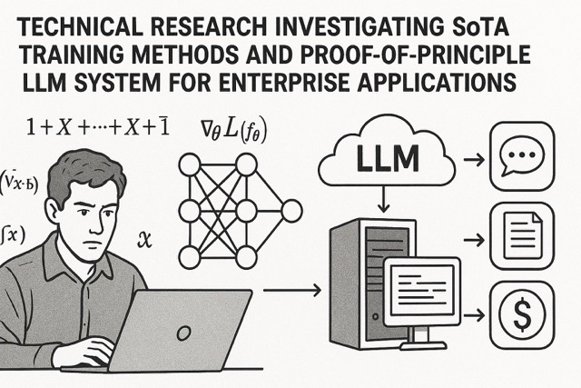
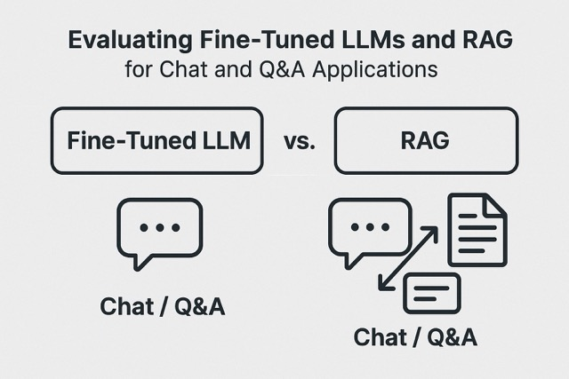
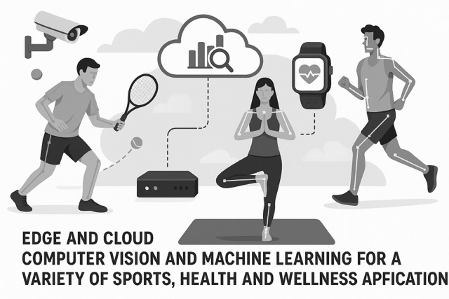
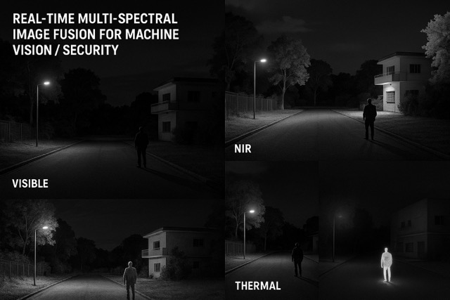
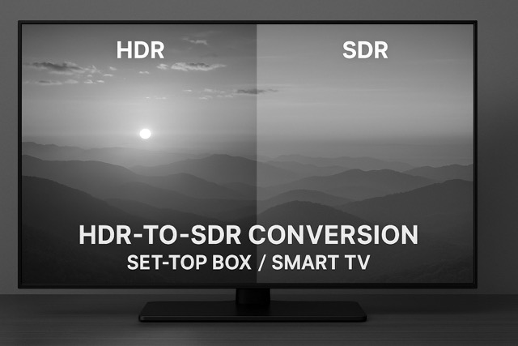
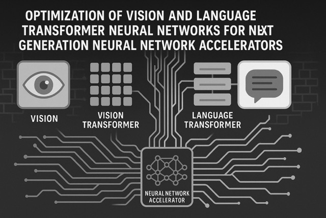
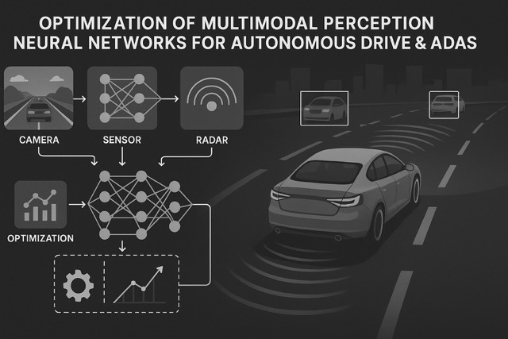
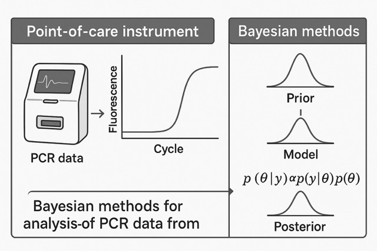
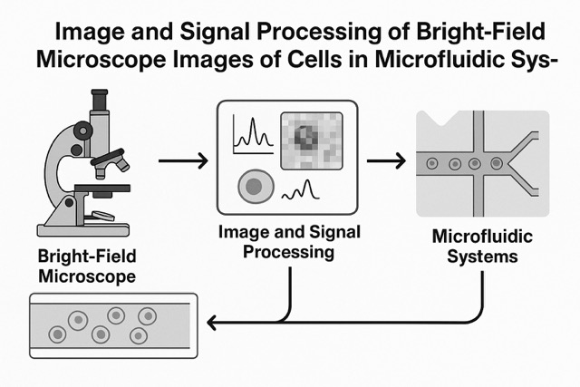
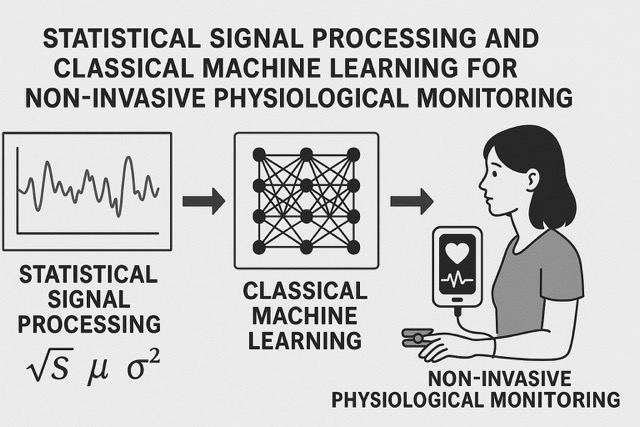
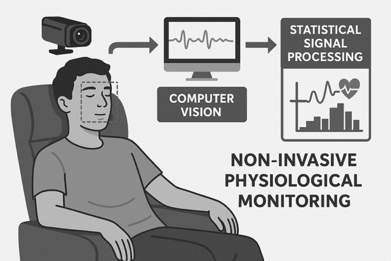